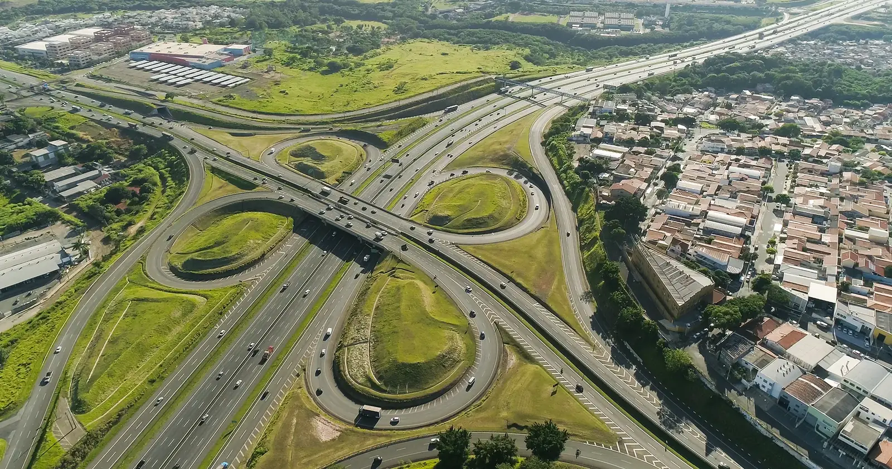

PL 5211/2026Educação
Isenção de IPI para veículos de transporte escolar
Reduz o custo de vans e ônibus novos usados para levar alunos.
Trabalho que faz acontecer.
Prestação de contas do mandato: projetos, votações e recursos para Campinas, a Região Metropolitana e o interior de São Paulo.
Fontes: informe do gabinete (2024), dados abertos da Câmara dos Deputados e Correio da Manhã (out/2026) · consultado em 02/11/2026
Reduz o custo de vans e ônibus novos usados para levar alunos.
Torna nulas as cláusulas que cobram mensalidades depois do pedido de cancelamento.
Garantias para advogadas grávidas, que amamentam, adotam ou acabaram de dar à luz.

Recursos que saem de Brasília e chegam a quem mora em Campinas, na RMC e no interior de São Paulo.
Começou no rádio, em Campinas, e construiu a vida pública passo a passo: da Câmara Municipal à Câmara dos Deputados, passando por dois mandatos como prefeito.
Atendimento a cidadãos, prefeituras e lideranças.
Agenda, entregas e bastidores do mandato.